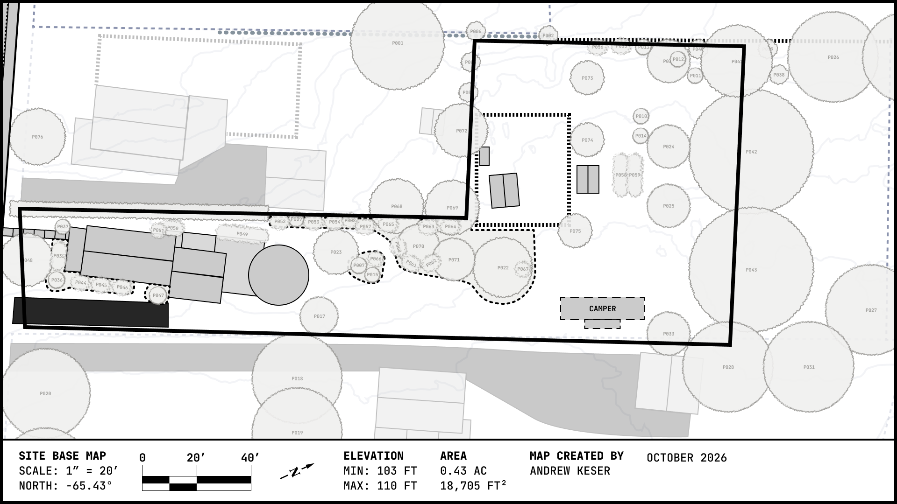
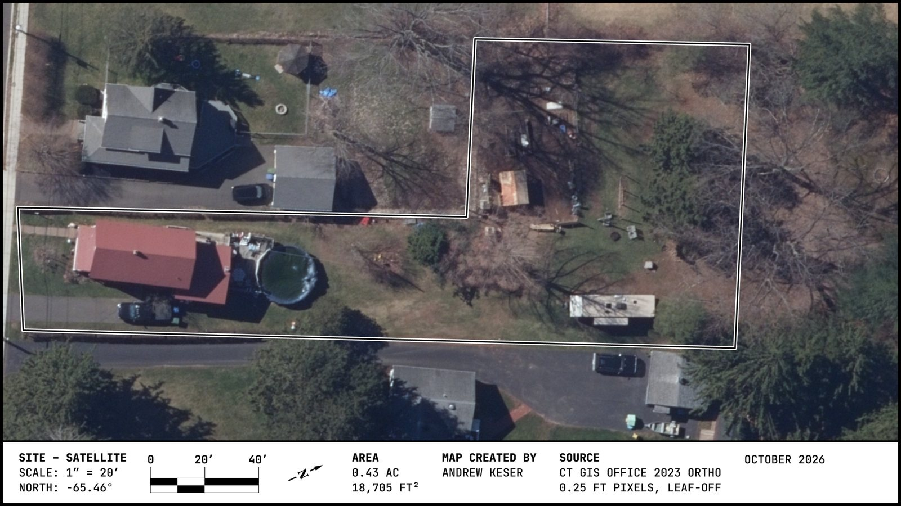

The site's full-color base map — parcel boundary, structures, and vegetation, hand-drawn to scale. Every other spatial page on this site (Species Inventory, Zones & Use, Sectors) works from this same layout.

Scale 1" = 20', true north at −65.43° from the drawing's own up direction, 41°34'22.04"N 72°38'03.90"W, elevation 103–110 ft (2023 lidar). Map created by Andrew Keser, October 2026.

The aerial under the base map: CT State GIS Office 2023 orthoimagery (leaf-off, 3 in pixels) via CT ECO, resampled into the drawing's frame (5.79 px/ft, north at −65.46°), so it lines up with every sheet built on the base map.
Codes below are printed directly on the map.